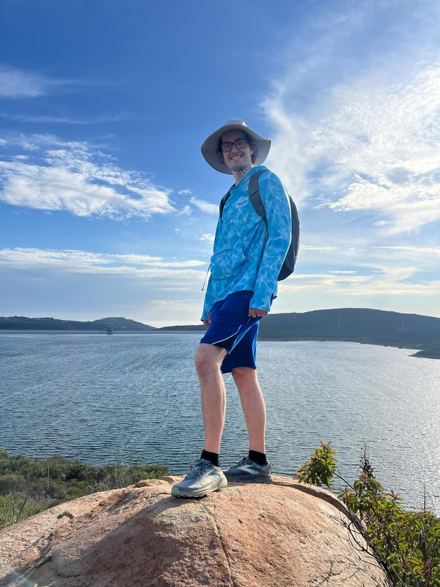

About Me

Hello! My name is Bucky and I'm a game designer with a strong technical background and a passion for combat, class design, systems, and multiplayer games. I graduated from UC Irvine in 2017 with a B.S. in Computer Game Science and I spent nearly six years at Intrepid Studios working on Ashes of Creation. That project has come to an unexpected end, but I'm excited to jump into my next game development adventure.
I love making games and experimenting with new ideas, and you can find links to all of my projects on the Home page. Feel free to explore my fun and often wacky creations. Enjoy!
Find Me
Top 10 Favorite Games (unordered)
- Halo
- Minecraft
- Sea of Thieves
- Super Mario 64
- Monster Hunter
- Age of Empires 2
- World of Warcraft
- Shores of Hazeron
- FTL: Faster than Light
- Populous: The Beginning
- Roller Coaster Tycoon (1&2)